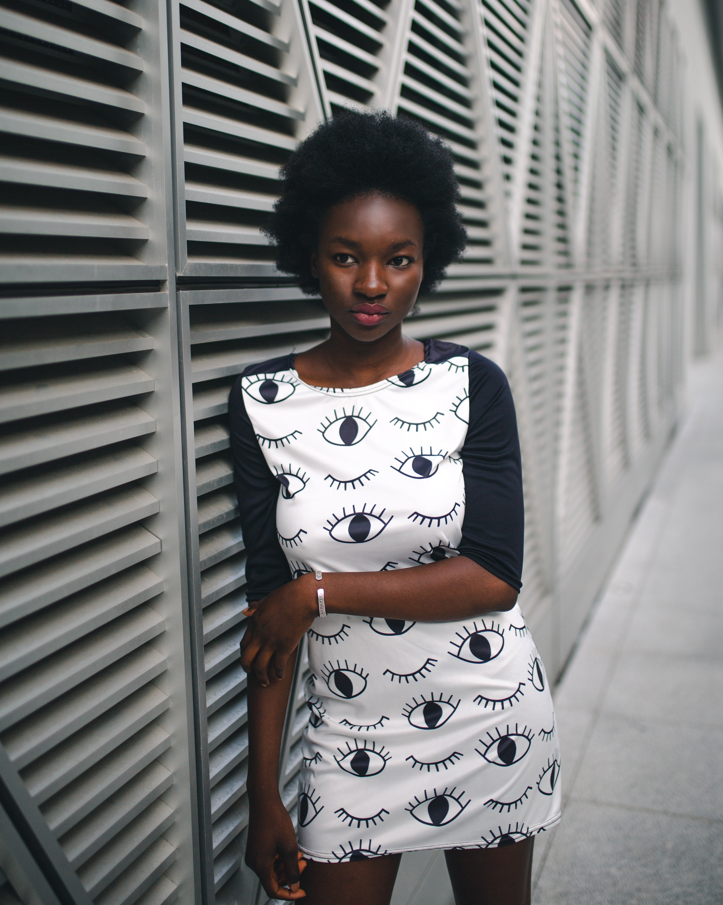

Kaja Jaronska | Photographer
about me
contact
Welcome to my photography page.
Enjoy my favourite shots below.
PEOPLE
FASHION

LANDSCAPE
Would love to know which section was your favourite:
People
Fashion
Landscape